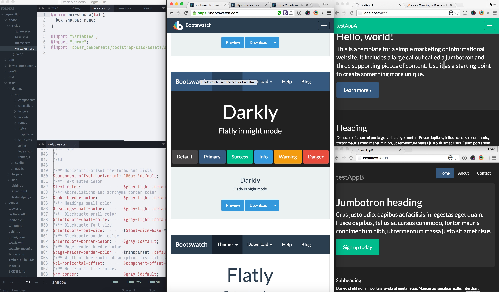

Refactoring Shared UI into an Addon
By Ryan LaBouve / @ryanlabouve
We started with 1 Ember app
Several months later, we had 4 Ember Apps
This is the story of an Addon that...
- Greater adaptability
- More consistency across projects
- DRY'd up our assets
- Reduced boilerplate (Making spinning up new projects easy & current projects easier to look at)
Ryan LaBouve
The LaBouves
Prologue
The Problem: Many Ember apps under one brand
The Solution: A UI library via an Addon
To fill in the back story, when I started there was on white-labeled ionic app & a rails api, and we needed a dashboard

Developed ember dash

Next we built the main website in Ember as well

Next we built a tool for clients to customize their apps

And more apps just keeping coming, all while our brand is constantly evolving.

The problems:
- Slow Adaptability (i.e. making UI changes is complex and error prone)
- No sharing (e.g. styles, vars, components, assets)
- Consistency is hard
- Style Collaboration is Messy
"Addons make it possible to easily share common code between applications"
— The Ember-CLI Docs
However
- I had no experience developing with addons
- I work at a startup, the pace is break-neck
- This would become a shared cornerstone between all of our projects
Act I
Demystifying the Process
Act I: Demystifying the Process
- Are addons in scope to solve our problems?
- Is it difficult to create addons?
- How do we share addons?
- Updating addons and propagating that change?
- How would this look if we were actively developing it?
Act I: Demystifying the Process
- Are addons in scope to solve our problems?
- Is it difficult to create addons?
- How do we share addons?
- Updating addons and propagating that change?
- How would this look if we were actively developing it?
What lured me in..
We need more than an input box, we need a color picker.
—MGMT

The APP (with just an input)
{{! app/application.hbs }}
Hex Color: {{input value=brandColor}}
step 1
check rating on ember observer:

step 1
6/10, good enough
emberobserver.com/addons/ember-spectrum-color-pickerstep 2
Install
cd ~/Desktop/myProject
ember install ember-spectrum-color-picker
step 2
Install
// app/templates/application.hbs
Hex Color: {{spectrum-color-picker
color=brandColor
preferredFormat="hex"}}
{{brandColor}}
TaDa!
Color should update as user drags picker
—MGMT

Welp...

RTFM'ing
github.com/rsschermer/ember-spectrum-color-pickermoveFiresChange (default: false): when set to true, the color value will be updated in real time, instead of only once the user clicks the 'choose' button.
...easy enough
Note for future self:
Good documentation is not a waste of time
Hex Color: {{spectrum-color-picker
color=brandColor
preferredFormat="hex"
moveFiresChange=true}}

Yey addons!
(no more cats, I promise)
Act I: Demystifying the Process
- Are addons in scope to solve our problems?
- Is it difficult to create addons?
- How do we share addons?
- Updating addons and propagating that change?
- How would this look if we were actively developing it?
My First Addon
How hard could it be?
spin-spin
An addon that simply makes things spin
ember addon spin-spin
ember g component spin-spin --pod
// will need since our UI still will live in templates
npm install --save ember-cli-htmlbars
{{yield}}
{{! /tests/dummy/app/templates/application.hbs}}
{{#spin-spin}}
Welcome to Ember
{{/spin-spin}}

Act I: Demystifying the Process
- Are addons in scope to solve our problems?
- Is it difficult to create addons?
- How do we share addons?
- Updating addons and propagating that change?
- How would this look if we were actively developing it?
Publishing Your Addon
Inside of the share-share folder
- Update package json some reasonable repo metadata
npm version 0.0.1npm publish
Installing your addon
cd ~/work/www
ember install spin-spin
...meanwhile in the www's application.hbs
{{#spin-spin}}
... whole contents of application.hbs
{{/spin-spin}}

Act I: Demystifying the Process
- Are addons in scope to solve our problems?
- Is it difficult to create addons?
- How do we share addons?
- Updating addons and propagating that change?
- How would this look if we were actively developing it?
Back in the addon we change animation-duration: 40000ms; and commit.
npm version 0.0.2npm publish
Next, let's go back into the project and run npm outdated.
Updated packages.json to be version 0.0.2 and npm install
Act I: Demystifying the Process
- Are addons in scope to solve our problems?
- Is it difficult to create addons?
- How do we share addons?
- Updating addons and propagating that change?
- How would this look if we were actively developing it?
Last, if I had to publish every change I wanted to see live... that would be terrible
# inside of spin spin
npm link
cd ~/work/www
# inside of website
npm link spin-spin
ember serve
Now we are running directly form our addon.
Even better, we can get live reload to work.
~/spin-spin/index.js
/* jshint node: true */
'use strict';
module.exports = {
name: 'spin-spin',
isDevelopingAddon: function() {
return true;
}
};
First class live reload support.
Act I: Demystifying the Process
- Are addons in scope to solve our problems?
- Is it difficult to create addons?
- How do we share addons?
- Updating addons and propagating that change?
- How would this look if we were actively developing it?
So that is the basic plumbing we'll use to refactor our UI, let's move on to some specific examples and techniques
Act II
Hands Dirty
Act II: Hands Dirty
Candidates for Refactor
- Customized Bootstrap
- Favicon
- Logos and Brand Assets
- fonts and icons
- analytics and tracking stuff
- Cross Project Custom Components (e.g. alerts, prompts, modals)
Act II: Hands Dirty
Candidates for Refactor
- Customized Bootstrap
- Favicon
- Logos and Brand Assets
- fonts and icons
- analytics and tracking stuff
- Cross Project Custom Components (e.g. alerts, prompts, modals)
Let's talk about Bootstrap™.
- Every project we have uses it
- We use bootstrap sass so we can directly customize variables
- Every change we make has to be manually moved across projects
Ripe for refactor
- We'll want to process SASS locally and demo stuff in our demo app
- We'll want the consuming project to transpile this SASS, so we could even override the variables from there
ember new testAppA && ember new testAppB
cd testAppA
npm install --save-dev ember-cli-sass
mv app/styles/app.css app/styles/app.scss
bower install bootstrap-sass --save
echo "@import 'bower_components/bootstrap-sass/assets/stylesheets/_bootstrap';" >> app/styles/app.scss
Blank

Bootstrap

Grab some sample code from http://getbootstrap.com/getting-started/#examples
Project A

Project B
Customize Variables on easy side.
Updating Bootstrap Theme

With theme applied
// testAppA:
// app/styles/app.scss
@import "variables";
@import "theme";
@import 'bower_components/bootstrap-sass/assets/stylesheets/_bootstrap';
Instead of copying and pasting for every single theme change we make, let's roll this up into an addon.
Test App A
Test App B
ember addon egm-uilib
npm install --save ember-cli-htmlbars
bower install bootstrap-sass --save
npm install ember-cli-sass --save
# ... just like before
- New Addon (We did this!)
- Install Bootstrap and SASS (We did this too!)
- Move SASS files into Addon
- Import From Addon in Consuming Projects
Just Checking
// in addon/styles/base.scss
body {
background: #bada55 !important;
}
// in consumer
// @import "variables";
// @import "theme";
// @import 'bower_components/bootstrap-sass/assets/stylesheets/_bootstrap';
@import "node_modules/egm-uilib/addon/styles/base";
@import "variables";
@import "theme";
@import 'bower_components/bootstrap-sass/assets/stylesheets/_bootstrap';
// In consumer
@import "node_modules/egm-uilib/addon/styles/base";
Link TestAppB and Import the 1 SASS file, and now A & B are powered by the same base!
Cyborg

Darkly
Flatly
United

- Faster Adaptability (i.e. make consistent, versioned, distributable changes)
- Sharing Style(e.g. styles, vars, components, assets)
- Consistency From Single Codebase
- Centralize Collaboration
Act II: Hands Dirty
Candidates for Refactor
- Customized Bootstrap
- Favicon
- Logos and Brand Assets
- fonts and icons
- analytics and tracking stuff
- Cross Project Custom Components (e.g. alerts, prompts, modals)
Let's talk about Brand Assets.
- They should be absolutely consistent (although that turns into a constant battle)
- Every time they change, they should change everywhere
- Cycles wasted looking for them trying to confirm they are right
Ripe for refactor
Here's our sample logos
And in reality there are likely tones of slight variations in quality, size, format, etc floating around
Read the Docs on where to start
Addon project structure
The addon project created follows these structure conventions:
| app/ - | merged with the application's namespace. |
| addon/ - | part of the addon’s namespace. |
| blueprints/ - | contains any blueprints that come with the addon, each in a separate directory |
| public/ - | static files which will be available in the application as /your-addon/* |
| test-support/ - | merged with the application's tests/ |
| tests/ - | test infrastructure including a "dummy" app and acceptance test helpers. |
| vendor/ - | vendor specific files, such as stylesheets, fonts, external libs etc. |
| ember-cli-build.js - | Compilation configuration |
| package.json - | Node meta-data, dependencies etc. |
| index.js - | main Node entry point (as per npm conventions) |
Addon project structure
The addon project created follows these structure conventions:
| app/ - | merged with the application’s namespace. |
| addon/ - | part of the addon’s namespace. |
| blueprints/ - | contains any blueprints that come with the addon, each in a separate directory |
| public/ - | static files which will be available in the application as /your-addon/* |
| test-support/ - | merged with the application’s tests/ |
| tests/ - | test infrastructure including a “dummy” app and acceptance test helpers. |
| vendor/ - | vendor specific files, such as stylesheets, fonts, external libs etc. |
| ember-cli-build.js - | Compilation configuration |
| package.json - | Node meta-data, dependencies etc. |
| index.js - | main Node entry point (as per npm conventions) |
Let's Verify
- mkdir public
- Place assets into 'public'
- ember build
- Check out /dist
- Faster Adaptability (i.e. updates, versioned, distributable changes)
- Sharing Style(e.g. finite classified variations)
- Consistency Using Single Source of Asset
- Centralize Collaboration
Measuring Success of Refactoring Shared UI into an Addon
- Increased Adaptability?
- Sharing Common Styles?
- Easier Consistency & Maintainability?
- Improved Collaboration?
Act III
Lessons Learned
Act III: Lessons Learned
- Shoulders of Giants: Code
- Shoulders of Giants: Releases
- Balancing Monoliths and Modularity
- Encapsulate then Refactor
- Tests well to upgrade well
- Visibility
Standing on Shoulder of Giants: Code
- When stuck, try to find an addons doing what you are doing
- When starting a new addon or new feature spend a lot of time studying other addons
- See how different addons solve the same problem
- ember-cli-materialize vs ember-paper
- ember-cli-foundation-sass vs ember-cli-bootstrap-sass
- ember-cli-sass vs ember-cli-less
Standing on Shoulder of Giants: Releases
Stoke collaboration and embracing a mature software development cycle
- SemVer
- Changelogs & Regular Releases
- Documentation
- Evangelize
Balancing Monoliths and Modules
- Just because you can move it to an addon doesn't mean you should
- More modularity equals more composability
- More monolithic means more weight
- Initial refactoring will likely result in a monolithic addon. Don't stop there
Encapsulate then Refactor
- At first I typically move over large chunks over code
- Then I try to dry it up
- And often I end up breaking the large chunks into small reusable bits bits
- (e.g. our svg preview)
Tests well to upgrade well
- Acceptance Tests in Consuming Apps will save your bacon
npm linkand run tests while developing where possible
Visibility
- Evangelize updates and progress
- Turn the
Dummy Appinto living documentation
Conclusion
The Journey is as useful as the destination
On the surface
Victory
Clear paths on fixing our original problems
- Slow Adaptability (i.e. changing all over the place)
- No sharing (e.g. styles, vars, components, assets)
- Consistency is hard
- Style Collaboration is Messy
On a deeper note, this was really my first deep dive into the ember ecosystem...
Node.js
Broccoli
OSS
Ember Itself
Go build addons
UI is a great place to start
Thanks!
Refactoring Shared UI into an Addon, the end
By Ryan LaBouve / @ryanlabouve